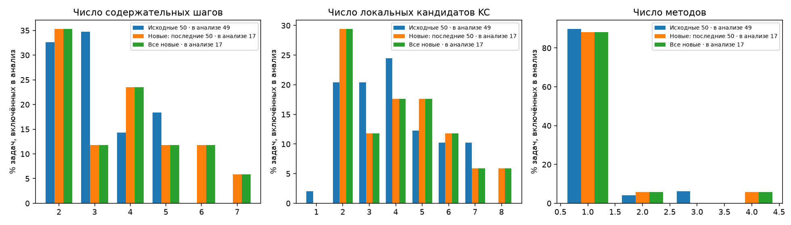
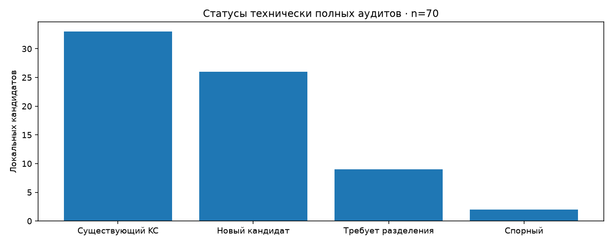
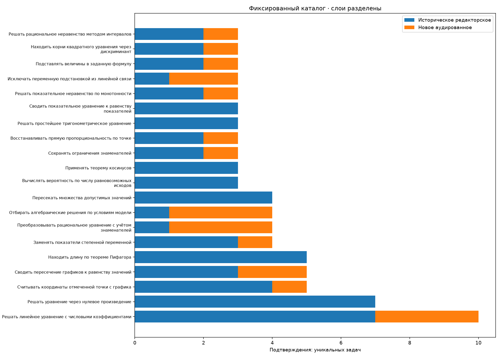

# ФИПИ: progress_incomplete_permitted, новые 50, накопленный 100 Сохранённые решения и аудит; внешнего эталона нет. Solved не является accuracy. | Слой | Выбрано | Автор | Полных пар | В частотах | Подтверждённых определений | Единичные / определения | |---|---:|---:|---:|---:|---:|---:| | baseline50 | 50 | 50 | 50 | 49 | 136 | 101/136 | | new_accumulated | 50 | 18 | 17 | 17 | 25 | 20/25 | | new_latest50 | 50 | 18 | 17 | 17 | 25 | 20/25 | | mixed_cumulative | 100 | 68 | 67 | 66 | 136 | 86/136 | Неполное сопоставление: 15/17 задач основных частот. Несопоставленные локальные кандидаты: 37/70. Это не число уникальных новых навыков. ## Статусы аудита - match: 33/70 локальных кандидатов технически полных аудитов. - new_candidate: 26/70 локальных кандидатов технически полных аудитов. - needs_split: 9/70 локальных кандидатов технически полных аудитов. - uncertain: 2/70 локальных кандидатов технически полных аудитов. ## Исключения из основных частот - eFF32e: historical_partial_or_review_exclusion - 033968: incomplete_or_technical_failure - E983D6: incomplete_or_technical_failure - 003F6E: incomplete_or_technical_failure - F416AF: incomplete_or_technical_failure - 79CEAC: incomplete_or_technical_failure - 3F52B8: incomplete_or_technical_failure - 00002A: incomplete_or_technical_failure - FD43B9: incomplete_or_technical_failure - 7EEB3E: incomplete_or_technical_failure - DDC830: incomplete_or_technical_failure - 02A17e: incomplete_or_technical_failure - 024079: incomplete_or_technical_failure - 8027FE: incomplete_or_technical_failure - 2F945c: incomplete_or_technical_failure - D6F31D: incomplete_or_technical_failure - 8EBB9F: incomplete_or_technical_failure - A1A34D: incomplete_or_technical_failure - BB421B: incomplete_or_technical_failure - FAC22B: incomplete_or_technical_failure - E0F447: incomplete_or_technical_failure - 91CD43: incomplete_or_technical_failure - 656B14: incomplete_or_technical_failure - FFBD0F: incomplete_or_technical_failure - C41083: incomplete_or_technical_failure - 338D5A: incomplete_or_technical_failure - 110B03: incomplete_or_technical_failure - DA9409: incomplete_or_technical_failure - 042F86: incomplete_or_technical_failure - 5c14cA: incomplete_or_technical_failure - B73557: incomplete_or_technical_failure - 7F0767: incomplete_or_technical_failure - 4B81D5: incomplete_or_technical_failure - cc3F47: incomplete_or_technical_failure ## Правила и ограничения - No answer key or external expertise: solved is not accuracy. - New candidates remain task-local; names do not establish identity. - Mixed cumulative frequencies combine historical editorial and independent audited provenance. - Transitions are task-presence across adjacent steps in a single method, excluding self-transitions; not prerequisites. - Composition describes selected tasks; main action frequencies exclude partial/unsolved, technical failures and any blocking audit issue. Новая выборка случайна среди допустимого остатка; исторические 50 выбраны для охвата. Различия состава и процедуры не позволяют причинных выводов. Все метки КЭС и шаблоны — описательные характеристики, не подтверждение одинакового метода. [Карточки и графики](index.html).




[
{
"batch": 1,
"valid": true,
"reason": null,
"path": "checks\\batch-01.json"
},
{
"batch": 2,
"valid": false,
"reason": "missing_health_check"
},
{
"batch": 3,
"valid": false,
"reason": "missing_health_check"
},
{
"batch": 4,
"valid": false,
"reason": "missing_health_check"
}
]